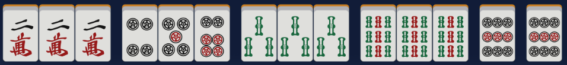

리치 마작 족보
1판
리치
멘젠 상태에서 텐파이 시 1000점을 지불해 선언 가능.
탕야오 (단요구)
요구패(1,9,풍패,삼원패)를 사용하지 않고 화료..
멘젠 쯔모 (문전청자모화)

멘젠 상태에서 패를 쯔모(드로우)하여 화료.
역패: 자풍패 (동/남/서/북)
자신의 위치와 동일한 풍패를 커쯔(3개같은모양)로 만들어 화료
역패: 장풍패 (동/남/서/북)
장풍과 같은 패일 때 (동풍전일때 동)장풍과 같은 방향의 풍패를 커쯔(3개같은모양)로 만들어 화료
역패: 삼원패 (백/발/중)

삼원패(백/발/중) 중 하나를 커쯔(3개같은모양)로 만들어 화료.
핑후 (평화)
숫자패, 객풍으로 머리를 만들고 슌쯔를 4쌍 만든 뒤,대기 패를 머리가 아닌 슌쯔로만들어 화료.
이페코 (일배구)
같은 종류, 같은 숫자의 연속이 2회인 상태에서 화료.
창깡 (창공)
다른 플레이어가 소명깡을 했을 때 해당 패가 자신 패의 화료 패일 경우 깡을 취소하고 론으로 성립.
영상개화 (린샹카이호)
깡을 하거나 북도라 선언 후 가져오는 패(영상패)로 화료.
해저로월
해당 국의 마지막 패를 가져와서 쯔모화료.
하저로어
해당 국의 마지막 패로 론 화료.
일발
리치 이후 누구든 울지 않고 (치,퐁,깡 선언) 1턴 이내 화료.
로컬역 : 츠바메가에시
다른 플레이어가 리치 선언 후 버림패를 론으로 화료.
로컬역 : 영상개론
다른 플레이어가 깡 선언 직후 버림패를 론으로 화료.
로컬역 : 십이낙태
4번 치-,퐁,깡 이후 단기 대기로 론 혹은 쯔모로 화료.
2판
더블 리치
아무도 치-,퐁,깡을 선언하지 않았을 때 1턴에 리치를 선언.
삼색동각
만수패, 삭수패, 통수패를 각각 같은 숫자로 커쯔나 깡으로 만들면 성립.
산깡쯔 (삼공자)
깡을 3번하고 화료.
또이또이
커쯔를 4쌍 만들어 화료.
산안커
안커(퐁하지 않고 만든 커쯔)를 3쌍 만들어 화료.
소삼원
백,발,중 중에 두 종류를 커쯔 한 종류를 또이쯔로 만들어 화료.
혼노두 (혼로토)
1,9,자패만으로 화료.
치또이 (칠대자)
(멘젠 한정) 또이쯔 (동일패 2개)를 7쌍 모으면 성립.
챤타 (혼전대요구)
(멘젠일시 1판 감소) 몸통과 머리에 모두 요구패(1,9,풍패,삼원패)가 있으면 성립.
일기통관
(후로 시 1판 감소) 한 가지 종류의 패로 123/456/789를 모두 모으면 성립.
삼색동순
(후로 시 1판 감소) 만수패, 삭수패, 통수패를 각각 같은 숫자로 슌쯔를 만들어 화료.
로컬역 : 오문제
만수,통수,삭수,풍패,삼원패를 모두 사용하여 화료.
로컬역 : 삼련각
연속된 커쯔를 3개 만들면 성립.
3판
량페코 (이배구)

(멘젠 한정) 이페코를 2쌍으로 만들어 화료.
준챤타 (순전대요구)

머리와 몸통에 모두 노두패(1,9)가 포함되어 있는 상태에서 화료.
혼일색
(후로 시 1판 감소) 한 종류의 수패와 자패만으로 이뤄지면 성립.
6판
청일색
(후로 시 1판 감소) 한 종류의 수패 (통,삭,만)로만 화료할 시 성립.
만관
유국만관
유국 시, 자신의 버림 패가 모두 요구패면 성립.
로컬역 : 일통로월 (5판)
해저로월을 1통으로 화료.
로컬역 : 구통로어 (5판)
하저로어를 9통으로 화료.
역만
천화
(오야 한정) 첫 플레이어가 첫 패로 화료.
지화

(자 한정) 첫 턴에 치,퐁,깡 없이 플레이어가 첫 패로 화료.
대삼원

백/발/중 3종류의 패를 모두 몸통으로 만들어 화료.
쓰안커 (사암각)

(멘젠 한정) 안커(퐁하지 않고 만든 커쯔) 4쌍을 만든 뒤 화료.
자일색

자패만으로 역을 만들어 화료.
녹일색

2삭,3삭,4삭, 6삭,8삭,발패만으로 화료. (발패는 필수가 아닙니다.)
청노두 (친로토)

노두패 (1,9)만으로 화료.
국사무쌍

모든 1,9, 자패를 13종 갖추고 그 중 하나를 또이쯔로 화료.
소사희

동남서북 중 세개를 커쯔, 남은 하나를 또이쯔로 만들고 화료.
쓰깡쯔 (사공자)
깡을 4번 하고 화료.
구련보등

(멘젠 한정) 만,통,삭 중 하나로 1112345678999+X의 형태를 갖추면 성립.
로컬역 : 인화

(멘젠 한정) 자신이 자일 때 순정 1순으로 론 화료.
로컬역 : 대차륜

(멘젠 한정) 2~8의 통수패 만으로 치또이를 만들어 화료.
로컬역 : 대죽림

(멘젠 한정) 2~8의 삭수패 만으로 치또이를 만들어 화료.
로컬역 : 대수린

(멘젠 한정) 2~8의 만수패 만으로 치또이를 만들어 화료.
로컬역 : 돌 위에서 삼년

(멘젠 한정) 더블 리치 상태로 해저로월이나 하저로어로 화료.
더블 역만
쓰안커 단기 (사암각 단기)
(멘젠 한정) 쓰안커를 단기 대기로 화료.
국사무쌍 13면 대기
(멘젠 한정) 국사무쌍을 13면 대기 형태로 만들어 화료.
구련보등 9면 대기
(멘젠 한정) 구련보등을 9면 대기 형태로 만들면 성립.
대사희
동남서북 4개를 모두 커쯔로 만들어 화료.
로컬역 : 대칠성
(멘젠 한정) 자패 7쌍을 치또이 형태로 만들어 화료.